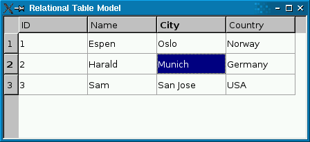

QSqlRelationalTableModel Class
The QSqlRelationalTableModel class provides an editable data model for a single database table, with foreign key support. More...
| Header: | #include <QSqlRelationalTableModel> |
| CMake: | find_package(Qt6 REQUIRED COMPONENTS Sql) target_link_libraries(mytarget PRIVATE Qt6::Sql) |
| qmake: | QT += sql |
| Inherits: | QSqlTableModel |
- List of all members, including inherited members
- QSqlRelationalTableModel is part of Database Classes.
Public Types
| enum | JoinMode { InnerJoin, LeftJoin } |
Public Functions
| QSqlRelationalTableModel(QObject *parent = nullptr, const QSqlDatabase &db = QSqlDatabase()) | |
| virtual | ~QSqlRelationalTableModel() |
| QSqlRelation | relation(int column) const |
| virtual QSqlTableModel * | relationModel(int column) const |
| void | setJoinMode(QSqlRelationalTableModel::JoinMode joinMode) |
| virtual void | setRelation(int column, const QSqlRelation &relation) |
Reimplemented Public Functions
| virtual void | clear() override |
| virtual QVariant | data(const QModelIndex &index, int role = Qt::DisplayRole) const override |
| virtual bool | removeColumns(int column, int count, const QModelIndex &parent = QModelIndex()) override |
| virtual bool | select() override |
| virtual bool | setData(const QModelIndex &index, const QVariant &value, int role = Qt::EditRole) override |
| virtual void | setTable(const QString &table) override |
Public Slots
| virtual void | revertRow(int row) override |
Reimplemented Protected Functions
| virtual bool | insertRowIntoTable(const QSqlRecord &values) override |
| virtual QString | orderByClause() const override |
| virtual QString | selectStatement() const override |
| virtual bool | updateRowInTable(int row, const QSqlRecord &values) override |
Detailed Description
QSqlRelationalTableModel acts like QSqlTableModel, but allows columns to be set as foreign keys into other database tables.
 |  |
The screenshot on the left shows a plain QSqlTableModel in a QTableView. Foreign keys (city and country) aren't resolved to human-readable values. The screenshot on the right shows a QSqlRelationalTableModel, with foreign keys resolved into human-readable text strings.
The following code snippet shows how the QSqlRelationalTableModel was set up:
model->setTable("employee");
model->setRelation(2, QSqlRelation("city", "id", "name"));
model->setRelation(3, QSqlRelation("country", "id", "name"));
The setRelation() function calls establish a relationship between two tables. The first call specifies that column 2 in table employee is a foreign key that maps with field id of table city, and that the view should present the city's name field to the user. The second call does something similar with column 3.
If you use a read-write QSqlRelationalTableModel, you probably want to use QSqlRelationalDelegate on the view. Unlike the default delegate, QSqlRelationalDelegate provides a combobox for fields that are foreign keys into other tables. To use the class, simply call QAbstractItemView::setItemDelegate() on the view with an instance of QSqlRelationalDelegate:
std::unique_ptr<QTableView> view{new QTableView};
view->setModel(model);
view->setItemDelegate(new QSqlRelationalDelegate(view.get()));
The relationaltablemodel example illustrates how to use QSqlRelationalTableModel in conjunction with QSqlRelationalDelegate to provide tables with foreign key support.

Notes:
- The table must have a primary key declared.
- The table's primary key may not contain a relation to another table.
- If a relational table contains keys that refer to non-existent rows in the referenced table, the rows containing the invalid keys will not be exposed through the model. The user or the database is responsible for keeping referential integrity.
- If a relation's display column name is also used as a column name in the relational table, or if it is used as display column name in more than one relation it will be aliased. The alias is the relation's table name, display column name and a unique id joined by an underscore (e.g. tablename_columnname_id). QSqlRecord::fieldName() will return the aliased column name. All occurrences of the duplicate display column name are aliased when duplication is detected, but no aliasing is done to the column names in the main table. The aliasing doesn't affect QSqlRelation, so QSqlRelation::displayColumn() will return the original display column name.
- The reference table name is aliased. The alias is the word "relTblAl" and the relationed column index joined by an underscore (e.g. relTblAl_2). The alias can be used to filter the table (For example, setFilter("relTblAl_2='Oslo' OR relTblAl_3='USA'")).
- When using setData() the role should always be Qt::EditRole, and when using data() the role should always be Qt::DisplayRole.
See also QSqlRelation, QSqlRelationalDelegate, and Relational Table Model Example.
Member Type Documentation
enum QSqlRelationalTableModel::JoinMode
| Constant | Value | Description |
|---|---|---|
QSqlRelationalTableModel::InnerJoin | 0 | - Inner join mode, return rows when there is at least one match in both tables. |
QSqlRelationalTableModel::LeftJoin | 1 | - Left join mode, returns all rows from the left table (table_name1), even if there are no matches in the right table (table_name2). |
See also QSqlRelationalTableModel::setJoinMode().
Member Function Documentation
[explicit] QSqlRelationalTableModel::QSqlRelationalTableModel(QObject *parent = nullptr, const QSqlDatabase &db = QSqlDatabase())
Creates an empty QSqlRelationalTableModel and sets the parent to parent and the database connection to db. If db is not valid, the default database connection will be used.
[virtual noexcept] QSqlRelationalTableModel::~QSqlRelationalTableModel()
Destroys the object and frees any allocated resources.
[override virtual] void QSqlRelationalTableModel::clear()
Reimplements: QSqlTableModel::clear().
[override virtual] QVariant QSqlRelationalTableModel::data(const QModelIndex &index, int role = Qt::DisplayRole) const
Reimplements: QSqlTableModel::data(const QModelIndex &index, int role) const.
See also setData().
[override virtual protected] bool QSqlRelationalTableModel::insertRowIntoTable(const QSqlRecord &values)
Reimplements: QSqlTableModel::insertRowIntoTable(const QSqlRecord &values).
[override virtual protected] QString QSqlRelationalTableModel::orderByClause() const
Reimplements: QSqlTableModel::orderByClause() const.
QSqlRelation QSqlRelationalTableModel::relation(int column) const
Returns the relation for the column column, or an invalid relation if no relation is set.
See also setRelation() and QSqlRelation::isValid().
[virtual] QSqlTableModel *QSqlRelationalTableModel::relationModel(int column) const
Returns a QSqlTableModel object for accessing the table for which column is a foreign key, or nullptr if there is no relation for the given column.
The returned object is owned by the QSqlRelationalTableModel.
See also setRelation() and relation().
[override virtual] bool QSqlRelationalTableModel::removeColumns(int column, int count, const QModelIndex &parent = QModelIndex())
Reimplements: QSqlTableModel::removeColumns(int column, int count, const QModelIndex &parent).
[override virtual slot] void QSqlRelationalTableModel::revertRow(int row)
Reimplements: QSqlTableModel::revertRow(int row).
[override virtual] bool QSqlRelationalTableModel::select()
Reimplements: QSqlTableModel::select().
[override virtual protected] QString QSqlRelationalTableModel::selectStatement() const
Reimplements: QSqlTableModel::selectStatement() const.
[override virtual] bool QSqlRelationalTableModel::setData(const QModelIndex &index, const QVariant &value, int role = Qt::EditRole)
Reimplements: QSqlTableModel::setData(const QModelIndex &index, const QVariant &value, int role).
Sets the data for the role in the item with the specified index to the value given. Depending on the edit strategy, the value might be applied to the database at once, or it may be cached in the model.
Returns true if the value could be set, or false on error (for example, if index is out of bounds).
For relational columns, value must be the index, not the display value. The index must also exist in the referenced table, otherwise the function returns false.
See also editStrategy(), data(), submit(), and revertRow().
void QSqlRelationalTableModel::setJoinMode(QSqlRelationalTableModel::JoinMode joinMode)
Sets the SQL joinMode to show or hide rows with NULL foreign keys. In InnerJoin mode (the default) these rows will not be shown: use the LeftJoin mode if you want to show them.
See also QSqlRelationalTableModel::JoinMode.
[virtual] void QSqlRelationalTableModel::setRelation(int column, const QSqlRelation &relation)
Lets the specified column be a foreign index specified by relation.
Example:
model->setTable("employee");
model->setRelation(2, QSqlRelation("city", "id", "name"));
The setRelation() call specifies that column 2 in table employee is a foreign key that maps with field id of table city, and that the view should present the city's name field to the user.
Note: The table's primary key may not contain a relation to another table.
See also relation().
[override virtual] void QSqlRelationalTableModel::setTable(const QString &table)
Reimplements: QSqlTableModel::setTable(const QString &tableName).
[override virtual protected] bool QSqlRelationalTableModel::updateRowInTable(int row, const QSqlRecord &values)
Reimplements: QSqlTableModel::updateRowInTable(int row, const QSqlRecord &values).